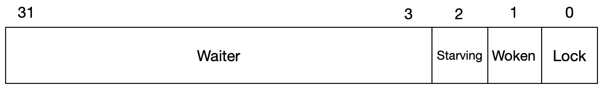

golang源码解读之互斥锁和读写锁
因为golang主推的高并发能力，锁在程序的处理中就显得格外的重要。今天就来分析一下golang中的Mutex和RWMutex。本文所有分析都基于golang1.14.6
Mutex
互斥锁的实现一般有两种方式：等待和阻塞。
// 等待
wait := func (bar int) {
for bar < 0 {
// options
bar--
}
}
// 阻塞
block := func(s *uintptr) {
*s--
if *s < 0 {
// add process to wait list and wait for calling
}
}
-
采用等待的方式，CPU会空转；如果在当前时间片内锁被其他进程释放，那么当前进程就能直接获取锁而无需等待CPU调度。
-
阻塞不会导致CPU空转，但是进程的上下文切换时间也会被浪费。
type Mutex struct {
state int32
sema uint32
}
const (
mutexLocked = 1 << iota // mutex is locked
mutexWoken
mutexStarving
mutexWaiterShift = iota
)
可以看到golang中Mutex结构体的定义很简单，一个表示状态的成员state和一个表示信号量的成员sema。state变量被划分成4个部分：mutexLock，mutextWoken， mutexStarving和当前被阻塞的goroutine数量。

含义如下：
mutexLocked对应右边低位第一个bit。值为1，表示锁被占用。值为0，表示锁未被占用mutexWoken对应右边低位第二个bit。值为1，表示打上唤醒标记。值为0，表示没有唤醒标记， 它主要用于自旋状态的通知和锁公平性的保证mutexStarving对应右边低位第三个bit。值为1，表示锁处于饥饿模式。值为0，表示锁存于正常模式mutexWaiterShift是偏移量。它值为3。用法是state>>=mutexWaiterShift之后，state的值就表示当前阻塞等待锁的goroutine个数。最多可以阻塞2^29个goroutine
mutex有两种模式：普通模式和饥饿模式。
在普通模式下，等待者是按FIFO排队等待，但是被唤醒的等待者不是直接拥有锁，而是要和新来的goroutine竞争。由于新来的goroutine已经在CPU上了，所以唤醒的等待者很有可能获取不到锁。在这种情况下，被唤醒的等待者直接加入到队列首部。如果被唤醒的等待者超过1ms没获取到锁，那么mutex将切换到饥饿模式。 在饥饿模式下，锁直接交给队列的第一个等待者。新来的goroutine不要去尝试获取锁，也不要自旋，即便是mutex处于unlock状态。直接将goroutine加到队列尾部。 如果一个等待者获取了锁，在下面两种情况之一将转换为普通模式：1.等待者处于队列尾部；2.等待者等待时间少于1ms。 普通模式是为了考虑更好的性能，因为一个goroutine可以连续多次获取锁，避免了等待调度和线程切换上下文时间。 饥饿模式解决了队尾的等待者一直无法获取锁的问题。
Mutex一共有两个方法：Lock和Unlock。
func (m *Mutex) Lock() {
// Fast path: grab unlocked mutex.
if atomic.CompareAndSwapInt32(&m.state, 0, mutexLocked) {
if race.Enabled {
race.Acquire(unsafe.Pointer(m))
}
return
}
// Slow path (outlined so that the fast path can be inlined)
m.lockSlow()
}
先来看Lock方法。首先判断锁是否被占用。若state值为0(未被占用)，则使用原子操作CAS将值置为1(占用)；否则调用lockSlow方法等待该锁被释放并再次占用。
func (m *Mutex) lockSlow() {
var waitStartTime int64
starving := false
awoke := false
iter := 0
old := m.state
for {
// 进入到这个循环的，有两种角色goroutine
// 一种是新来的goroutine。另一种是被唤醒的goroutine。所以它们可能在这个地方再一起竞争锁
// 如果新来的goroutine抢成功了，那另一个只能再阻塞着等待。但超过1ms后，锁会转换成饥饿模式
// 在这个模式下，所有新来的goroutine必须排在队伍的后面。没有抢锁资格
// 饥饿模式和锁被占用的情况下，不能自旋
if old&(mutexLocked|mutexStarving) == mutexLocked && runtime_canSpin(iter) {
// woken位没有被标记；被阻塞等待goroutine的个数大于0
if !awoke && old&mutexWoken == 0 && old>>mutexWaiterShift != 0 &&
atomic.CompareAndSwapInt32(&m.state, old, old|mutexWoken) {
// 可以自旋了，那就设置上woken位，在unlock时，如果发现有别的goroutine在自旋，就立即返回，有被阻塞的goroutine也不唤醒了
awoke = true
}
// runtime_doSpin -> sync_runtime_doSpin
// 每次自旋30个时钟周期，最多120个周期
runtime_doSpin()
iter++
old = m.state
continue
}
// 自旋完了还是等不到锁 或 可以上锁
new := old
// 饥饿模式下的锁不抢
if old&mutexStarving == 0 {
// 非饥饿模式下，可以抢锁
new |= mutexLocked
}
if old&(mutexLocked|mutexStarving) != 0 {
// 已经被上锁了，或锁处于饥饿模式下，就阻塞当前的goroutine
new += 1 << mutexWaiterShift
}
if starving && old&mutexLocked != 0 {
// 当前的goroutine已经被饿着了，所以要把锁设置为饥饿模式
new |= mutexStarving
}
if awoke {
if new&mutexWoken == 0 {
throw("sync: inconsistent mutex state")
}
// 当前的goroutine有自旋过，但现在已经自旋结束了。所以要取消woken标记
new &^= mutexWoken
}
if atomic.CompareAndSwapInt32(&m.state, old, new) {
if old&(mutexLocked|mutexStarving) == 0 {
// 成功上锁
break // locked the mutex with CAS
}
// 主要是为了和第一次调用的Lock的g划分不同的优先级
queueLifo := waitStartTime != 0
if waitStartTime == 0 {
waitStartTime = runtime_nanotime()
}
// 使用信号量阻塞当前的g
// 如果当前g已经阻塞等待过一次了，queueLifo被赋值true，排到等待队列的最前方
runtime_SemacquireMutex(&m.sema, queueLifo, 1)
// 判断当前g是否被饿着了
starving = starving || runtime_nanotime()-waitStartTime > starvationThresholdNs
old = m.state
if old&mutexStarving != 0 {
// 饥饿模式下被唤醒的
if old&(mutexLocked|mutexWoken) != 0 || old>>mutexWaiterShift == 0 {
throw("sync: inconsistent mutex state")
}
delta := int32(mutexLocked - 1<<mutexWaiterShift)
if !starving || old>>mutexWaiterShift == 1 {
// 退出饥饿模式
// 饥饿模式会影响自旋
delta -= mutexStarving
}
atomic.AddInt32(&m.state, delta)
break
}
// 继续竞争锁
// 必须设置为true，这样新一轮的CAS之前，就可以取消woken模式。
// 因为通过信号量释放锁时，为了保持公平性，会同时设置woken模式。
awoke = true
iter = 0
} else {
old = m.state
}
}
if race.Enabled {
race.Acquire(unsafe.Pointer(m))
}
}
当锁被占用，但满足自旋条件时，自旋同时标志woken状态。此后，若占用mutex的goroutine释放锁时，发现woken标志位被标记，直接return，不做唤醒，让自旋的goroutine有更大的机会抢到锁。
if old&(mutexLocked|mutexStarving) == mutexLocked && runtime_canSpin(iter)：
- 锁已被占用，并且锁不处于饥饿模式
- 积累的自旋次数小于最大自旋次数（
active_spin=4） - cpu核数大于1
- 有空闲的P
- 当前goroutine所挂载的P下，本地待运行队列为空
if old>>mutexWaiterShift == 0 || old&(mutexLocked|mutexWoken|mutexStarving) != 0 {
return
}
来看unlock方法：
func (m *Mutex) Unlock() {
if race.Enabled {
_ = m.state
race.Release(unsafe.Pointer(m))
}
// Fast path: drop lock bit.
new := atomic.AddInt32(&m.state, -mutexLocked)
if (new+mutexLocked)&mutexLocked == 0 {
// 不能多次执行unclock()
panic("sync: unlock of unlocked mutex")
}
if new&mutexStarving == 0 {
// 非饥饿模式
old := new
for {
// 没有被阻塞的goroutine。直接返回
// 有阻塞的goroutine，但处于woken模式，直接返回
// 有阻塞的goroutine，但被上锁了。可能发生在此for循环内，第一次CAS不成功。因为CAS前可能被新的goroutine抢到锁。直接返回
// 有阻塞的goroutine，但锁处于饥饿模式。可能发生在被阻塞的goroutine不是被唤醒调度的，而是被正常调度运行的。直接返回
if old>>mutexWaiterShift == 0 || old&(mutexLocked|mutexWoken|mutexStarving) != 0 {
return
}
// 有阻塞的goroutine，唤醒一个或变为没有阻塞的goroutine了就退出
// 这个被唤醒的goroutine还需要跟新来的goroutine竞争
// 如果只剩最后一个被阻塞的goroutine。唤醒它之后，state就变成0。
// 如果此刻来一个新的goroutine抢锁，它有可能在goroutine被重新调度之前抢锁成功。
// 这样就失去公平性了，不能让它那么干，所以这里也要设置为woken模式。
// 因为Lock方法开始的fast path，CAS操作的old值是0。这里设置woken模式成功后，后来者就只能乖乖排队。保持了锁的公平性
new = (old - 1<<mutexWaiterShift) | mutexWoken
if atomic.CompareAndSwapInt32(&m.state, old, new) {
runtime_Semrelease(&m.sema, false)
return
}
old = m.state
}
} else {
// 饥饿模式唤醒一个goroutine
runtime_Semrelease(&m.sema, true)
}
}
释放锁时，检查Woken标记为空。而阻塞队列里有goroutine需要被唤醒。那么在唤醒时，同时标记锁Woken。这里可能有疑问，原来没有Woken标记，为什么在唤醒一个goroutine要主动标记呢？
考虑这样的场景：现在阻塞队列里只有一个goroutine。把它唤醒后，还得等调度器运行到它，它自己再去抢锁。但在调度器运行到它之前，很可能新的竞争者参与进来，此时锁被抢走的概率就很大。
这有失公平，被阻塞的goroutine是先到者，新的竞争者是后来者。应该尽量让它们一起竞争。
设置Woken标记后，state就肯定不为零。此时新来的竞争者，在执行Lock()的fast-path时会失败，接下来就只能乖乖排队了。
go有三种方式来保证Mutex锁尽量公平：
- 在锁释放时，主动设置Woken标记，防止新的竞争者轻易抢到锁。
- 竞争者进阻塞队列策略不一样。新的竞争者，抢不到锁，就排在队列尾部。先来竞争者，从队列中被唤醒后，还是抢不到锁，就放在队列头部。
- 任何竞争者，被阻塞等待的时间超过指定阀值(1ms)。锁就转为饥饿模式。这时锁释放时会唤醒它们，手递手式把锁资源给它们。别的竞争者（包括新来的）都抢不到。直到把饥饿问题解决掉。
Mutex的阻塞和唤醒机制
源码中使用的semacquire和semrelease代表的是信号的阻塞和唤醒。
go的runtime有一个全局变量semtable，它放置了所有的信号量。
var semtable [semTabSize]struct {
root semaRoot
pad [sys.CacheLineSize - unsafe.Sizeof(semaRoot{})]byte
}
func semacquire1(addr *uint32, lifo bool, profile semaProfileFlags)
func semrelease1(addr *uint32, handoff bool)
每个信号量都由一个变量地址指定。Mutex就是用成员sema的地址。在阻塞时，调用semacquire1，把地址(addr)传给它。如果addr大于1，并且通过CAS减一成功，那就说明获取信号量成功。不用阻塞。否则，semacquire1会在semtable数组中找一个元素和它对应上。每个元素都有一个root，这个root是Treap树。最后addr变成一个树节点，这个树节点，有自己的一个队列，专门放被阻塞的goroutine。这个队列是个双端队列，头尾都可以进。semacquire1把当前goroutine相关元数据放进阻塞队列之后，就挂起了。semrelease1是给addr CAS加一。如果发现当前addr上有阻塞的goroutine时，就取一个出来，唤醒它，让它自己再去semacquire1。这是handoff为false的情况。但handoff为true的话，就尝试手递手地把信号量送给这个goroutine。等于说goroutine不用再自己去抢了，因为自己再去抢有可能抢不到。最后semrelease1会把取出来的这个goroutine挂在当前P的本地待运行队列尾部，等待调度执行。就是这样，在获取不到Mutex锁时，通过信号量来阻塞和唤醒goroutine。
RWMutex
接下来，再来看看golang中对于读写锁RWMutex的实现。
在分析源码之前，我们知道，读写锁与互斥锁有一点不同，它支持多个进程同时读数据，但是当有进程在读操作时，不支持写操作；同时，它支持单个进程进行写操作，当有进程在执行写操作时，不允许进行读操作。
那么很容易就能联想到通过互斥锁来实现读写锁：
type RWMutex struct {
rCount int32
m Mutex
}
func (rw *RWMutex) RLock() {
if atomic.AddInt32(&rw.rCount, 1) == 1 {
rw.m.Lock()
}
}
func (rw *RWMutex) RUnlock() {
if atomic.AddInt32(&rw.rCount, -1) == 0 {
rw.m.Unlock()
}
}
func (rw *RWMutex) Lock() {
rw.m.Lock()
}
func (rw *RWMutex) Unlock() {
rw.m.Unlock()
}
但这也存在缺陷：当场景中，读操作比较多时，很容易导致写操作等待饥渴。即因为读操作之间不会互斥，导致写操作会因为读操作不停的”插队“，而一直处于等待状态。
那么，让我来看看golang是怎么实现读写锁的。
RWMutex源码解读
// If a goroutine holds a RWMutex for reading and another goroutine might
// call Lock, no goroutine should expect to be able to acquire a read lock
// until the initial read lock is released. In particular, this prohibits
// recursive read locking. This is to ensure that the lock eventually becomes
// available; a blocked Lock call excludes new readers from acquiring the
// lock.
type RWMutex struct {
w Mutex // held if there are pending writers
writerSem uint32 // semaphore for writers to wait for completing readers
readerSem uint32 // semaphore for readers to wait for completing writers
readerCount int32 // number of pending readers
readerWait int32 // number of departing readers
}
从RWMutex的结构体中可以看到，golang的实现中利用到了Mutex。同时，也使用到了writeSem和readerSem作为两个信号量处理读写进程之间的关系。最后使用readerCount记录执行中的读进程数，readerWait记录处于阻塞状态的读进程数。
func (rw *RWMutex) RLock() {
if atomic.AddInt32(&rw.readerCount, 1) < 0 {
// A writer is pending, wait for it.
runtime_SemacquireMutex(&rw.readerSem, false, 0)
}
}
func (rw *RWMutex) RUnlock() {
if r := atomic.AddInt32(&rw.readerCount, -1); r < 0 {
// Outlined slow-path to allow the fast-path to be inlined
rw.rUnlockSlow(r)
}
}
func (rw *RWMutex) rUnlockSlow(r int32) {
if r+1 == 0 || r+1 == -rwmutexMaxReaders {
throw("sync: RUnlock of unlocked RWMutex")
}
// A writer is pending.
if atomic.AddInt32(&rw.readerWait, -1) == 0 {
runtime_Semrelease(&rw.writerSem, false, 1)
}
}
去除race detect相关代码后，可以看到，相比于Mutex的实现，RWMutex的实现要简单很多。首先来看RLock方法和RUnlock方法，可以看到，当readCount数量小于0的时候，readerSem才会阻塞等待。结合后面的Lock方法可以看到，readCount<0表示的是，当前有写操作被阻塞，为了解决上面提到的写操作等待饥渴问题，后到的读操作必须执行等待。RUnlock首先判断是否存在别的读操作锁，若是，则直接返回；否则，先判断是否重复释放锁，然后再唤醒writerSem等待信号。
func (rw *RWMutex) Lock() {
// First, resolve competition with other writers.
rw.w.Lock()
// Announce to readers there is a pending writer.
r := atomic.AddInt32(&rw.readerCount, -rwmutexMaxReaders) + rwmutexMaxReaders
// Wait for active readers.
if r != 0 && atomic.AddInt32(&rw.readerWait, r) != 0 {
runtime_SemacquireMutex(&rw.writerSem, false, 0)
}
}
func (rw *RWMutex) Unlock() {
r := atomic.AddInt32(&rw.readerCount, rwmutexMaxReaders)
if r >= rwmutexMaxReaders {
throw("sync: Unlock of unlocked RWMutex")
}
// Unblock blocked readers, if any.
for i := 0; i < int(r); i++ {
runtime_Semrelease(&rw.readerSem, false, 0)
}
// Allow other writers to proceed.
rw.w.Unlock()
}
继续看Lock和Unlock的实现。Lock的时候先上锁，然后再给readerCount赋负值，标记当前有writer处于等待，如果当前有读操作，那么等待writerSem的释放，否则，直接返回（占用锁成功）。Unlock的时候，先将readerCount还原，然后判断该锁是否被重复释放。接下来就将所有被阻塞的readerSem唤醒，最后再释放锁。
简单总结
//reader到来，前面有writer
RLock()
if writer exist:
wait(readerSem)
Unlock()
signal(readerSem)
//writer到来，前面有reader
Lock()
if reader exist:
wait(writerSem)
RUnlock()
signal(writerSem)
不得不说golang的读写锁实现非常巧妙。